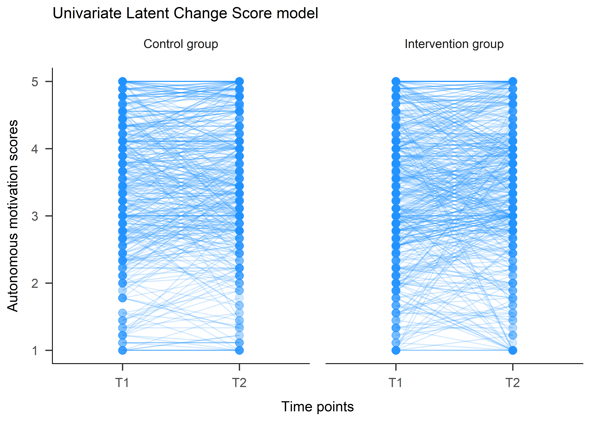
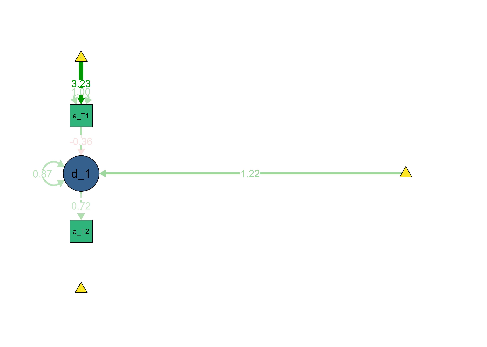
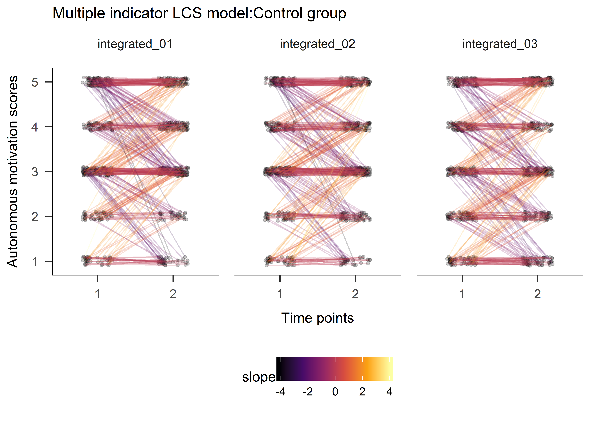
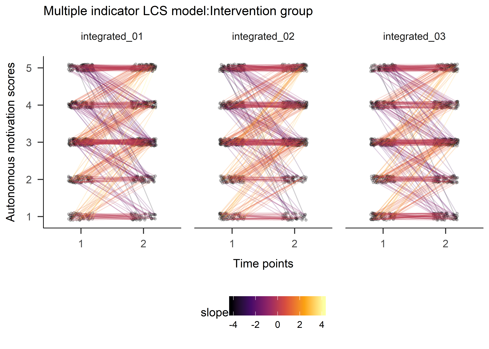
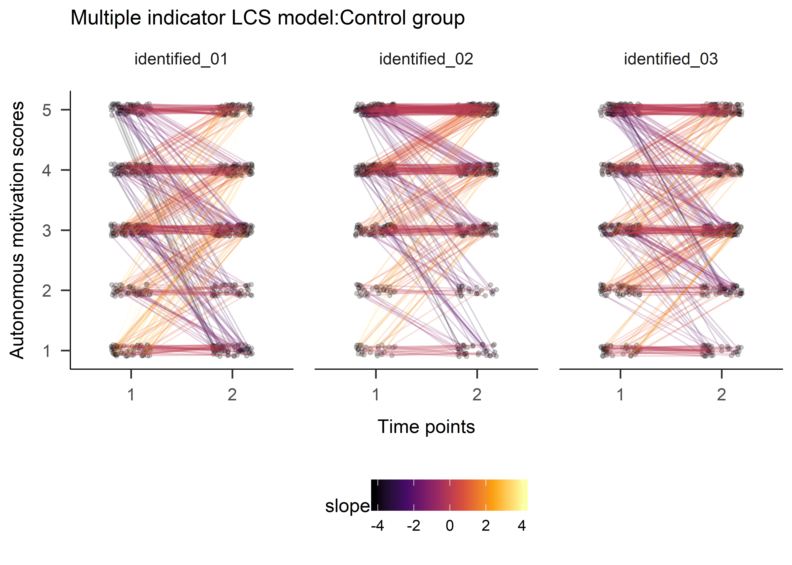
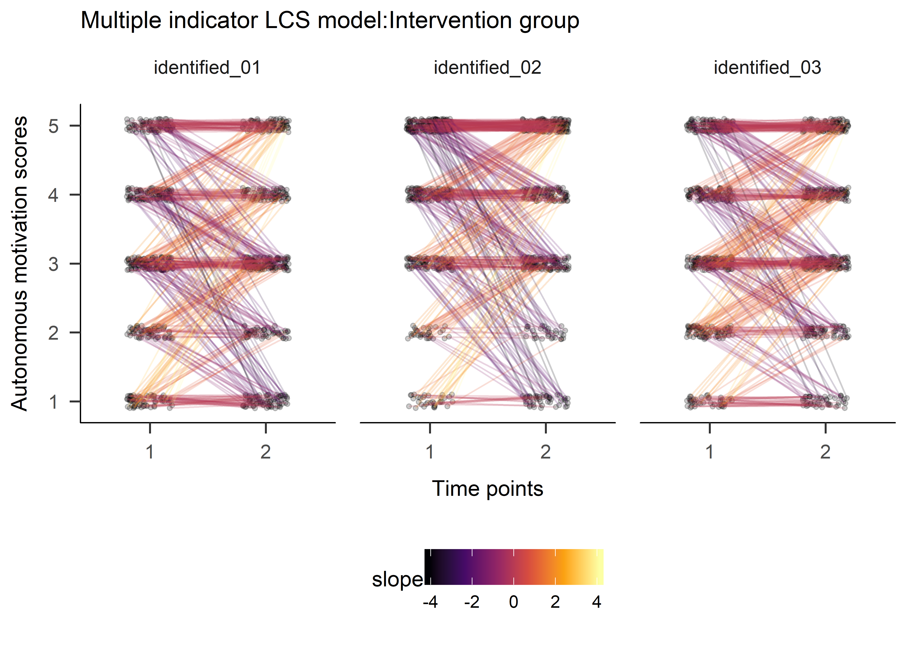
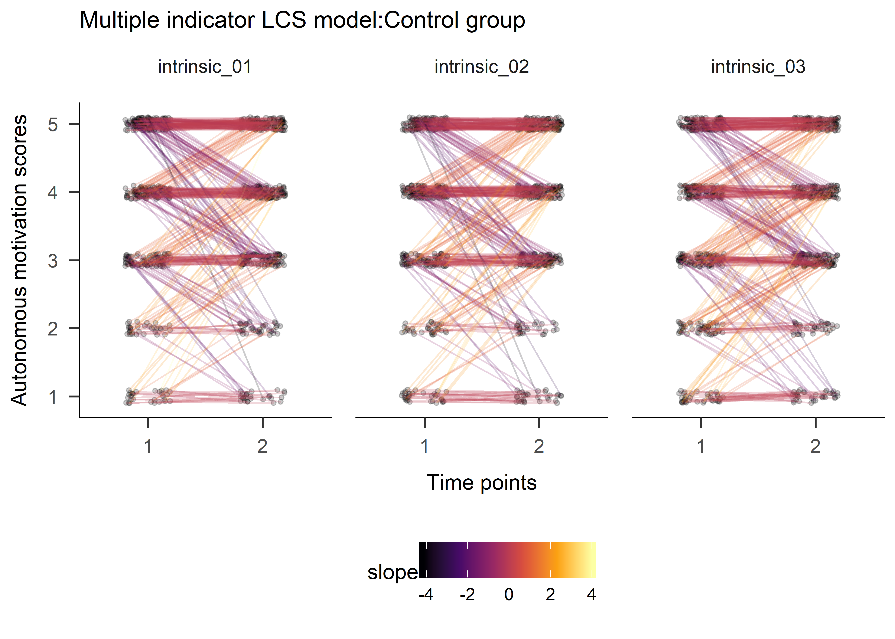
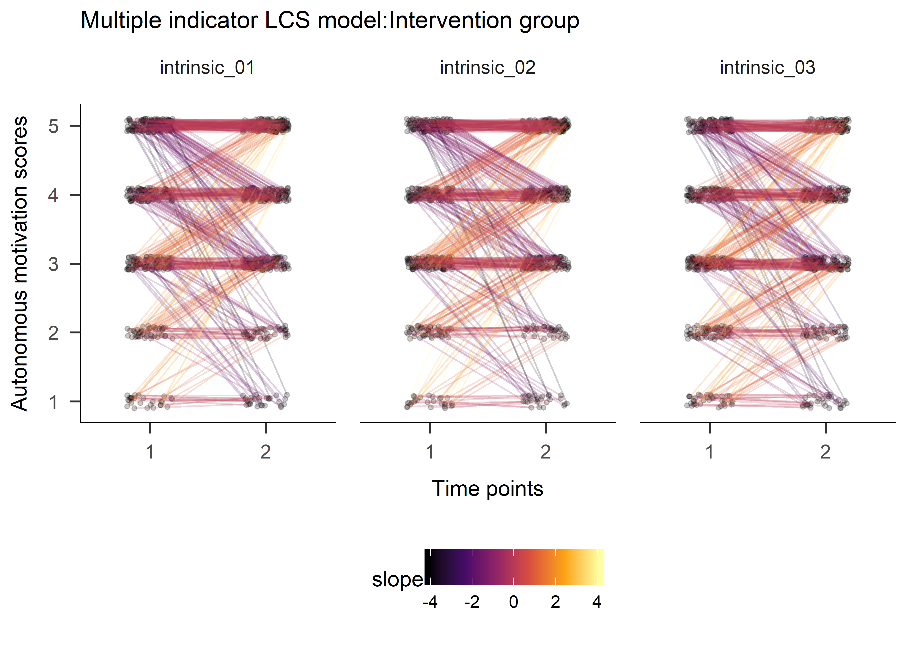
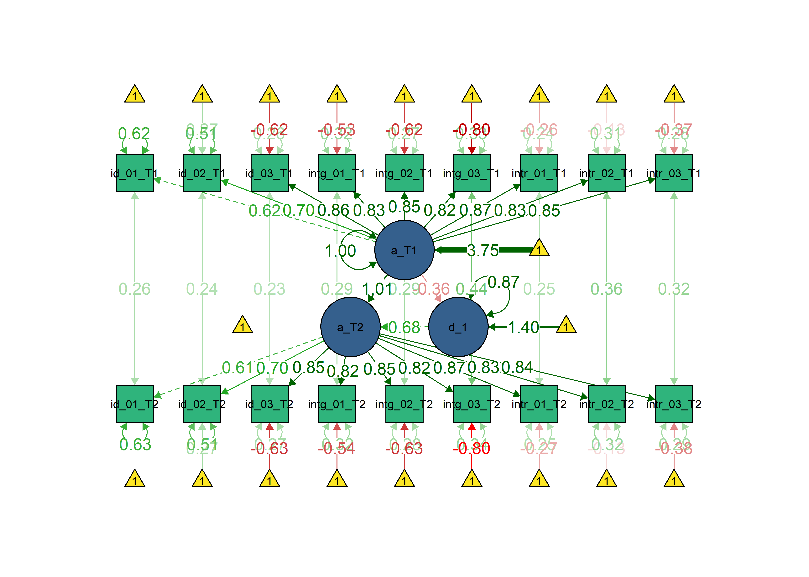

source("T1_plus_T3-datasetup.R")#This script is adapted from the manuscript
#'Developmental cognitive neuroscience using Latent Change Score models: A tutorial and applications'
#Rogier A. Kievit, Andreas M. Brandmaier, Gabriel Ziegler, Anne-Laura van Harmelen,
#Susanne de Mooij, Michael Moutoussisa, Ian Goodyer, Ed Bullmore, Peter Jones,
#Peter Fonagy, NSPN Consortium, Ulman Lindenberger & Raymond J. Dolan
#The original code was written by Rogier A. Kievit (rogier.kievit@mrc-cbu.cam.ac.uk), 30 January 2017.
#It may be used, (re)shared and modified freely under a CC-BY license
#This script simulates, then saves, then fits, data for a univariate Latent Change Score model.
# Select data
data <- df %>% dplyr::select(
id,
autonomous_T1 = PA_autonomous_T1,
autonomous_T2 = PA_autonomous_T3 # In the study, there was a mid-intervention T2, but for intervention group only
)
# Fit the Univariate Latent Change Score model
ULCS <- '
autonomous_T2 ~ 1*autonomous_T1 # Fixed regression of T2 on T1
d_autonomous1 =~ 1*autonomous_T2 # Fixed regression of d_autonomous1 on autonomous_T2
autonomous_T2 ~ 0*1 # This line constrains the intercept of autonomous_T2 to 0
autonomous_T2 ~~ 0*autonomous_T2 # This fixes the variance of the autonomous_T2 to 0
d_autonomous1 ~ 1 # This estimates the intercept of the change scores
autonomous_T1 ~ 1 # This estimates the intercept of autonomous_T1
d_autonomous1 ~~ d_autonomous1 # This estimates the variance of the change scores
autonomous_T1 ~~ autonomous_T1 # This estimates the variance of autonomous_T1
d_autonomous1 ~ autonomous_T1 # This estimates the self-feedback parameter
'
fitULCS <- lavaan::lavaan(ULCS, data = data, estimator='mlr', fixed.x=FALSE, missing='fiml')
## Warning in lav_data_full(data = data, group = group, cluster = cluster, : lavaan WARNING: some cases are empty and will be ignored:
## 4 29 37 76 134 245 351 352 385 493 494 495 623 722 772 774 782 787 791 792 921 967 1112
lavaan::summary(fitULCS, fit.measures = TRUE, standardized = TRUE, rsquare = TRUE)
## lavaan (0.5-23.1097) converged normally after 20 iterations
##
## Used Total
## Number of observations 1142 1165
##
## Number of missing patterns 3
##
## Estimator ML Robust
## Minimum Function Test Statistic 0.000 0.000
## Degrees of freedom 0 0
## Scaling correction factor NA
## for the Yuan-Bentler correction
##
## Model test baseline model:
##
## Minimum Function Test Statistic 698.523 294.613
## Degrees of freedom 1 1
## P-value 0.000 0.000
##
## User model versus baseline model:
##
## Comparative Fit Index (CFI) 1.000 1.000
## Tucker-Lewis Index (TLI) 1.000 1.000
##
## Robust Comparative Fit Index (CFI) 1.000
## Robust Tucker-Lewis Index (TLI) 1.000
##
## Loglikelihood and Information Criteria:
##
## Loglikelihood user model (H0) -2602.254 -2602.254
## Loglikelihood unrestricted model (H1) -2602.254 -2602.254
##
## Number of free parameters 5 5
## Akaike (AIC) 5214.508 5214.508
## Bayesian (BIC) 5239.711 5239.711
## Sample-size adjusted Bayesian (BIC) 5223.829 5223.829
##
## Root Mean Square Error of Approximation:
##
## RMSEA 0.000 0.000
## 90 Percent Confidence Interval 0.000 0.000 0.000 0.000
## P-value RMSEA <= 0.05 NA NA
##
## Robust RMSEA 0.000
## 90 Percent Confidence Interval 0.000 0.000
##
## Standardized Root Mean Square Residual:
##
## SRMR 0.000 0.000
##
## Parameter Estimates:
##
## Information Observed
## Standard Errors Robust.huber.white
##
## Latent Variables:
## Estimate Std.Err z-value P(>|z|) Std.lv Std.all
## d_autonomous1 =~
## autonomous_T2 1.000 0.751 0.716
##
## Regressions:
## Estimate Std.Err z-value P(>|z|) Std.lv Std.all
## autonomous_T2 ~
## autonomous_T1 1.000 1.000 1.006
## d_autonomous1 ~
## autonomous_T1 -0.260 0.024 -10.819 0.000 -0.346 -0.364
##
## Intercepts:
## Estimate Std.Err z-value P(>|z|) Std.lv Std.all
## .autonomous_T2 0.000 0.000 0.000
## .d_autonomous1 0.919 0.087 10.619 0.000 1.224 1.224
## autonomous_T1 3.402 0.032 107.453 0.000 3.402 3.225
##
## Variances:
## Estimate Std.Err z-value P(>|z|) Std.lv Std.all
## .autonomous_T2 0.000 0.000 0.000
## .d_autonomous1 0.489 0.033 14.768 0.000 0.867 0.867
## autonomous_T1 1.112 0.039 28.594 0.000 1.112 1.000
##
## R-Square:
## Estimate
## autonomous_T2 1.000
## d_autonomous1 0.133
lavaan::coef(fitULCS)
## d_autonomous1~1 autonomous_T1~1
## 0.919 3.402
## d_autonomous1~~d_autonomous1 autonomous_T1~~autonomous_T1
## 0.489 1.112
## d_autonomous1~autonomous_T1
## -0.260
# Plot raw scores
df %>% dplyr::select(
id,
intervention,
T1 = PA_autonomous_T1,
T2 = PA_autonomous_T3 # In the study, there was a mid-intervention T2, but for intervention group only
) %>%
mutate(intervention = factor(intervention, labels = c("Control group", "Intervention group"))) %>%
gather(variable, value, -id, -intervention) %>%
na.omit(.) %>%
ggplot(aes(variable, value, group=id)) +
geom_point(col = 'dodgerblue', size = 3, alpha = .2) +
geom_line(col = 'dodgerblue', alpha = .2) +
ggtitle('Univariate Latent Change Score model') +
ylab('Autonomous motivation scores') +
xlab('Time points') +
facet_wrap("intervention")
# Plot the SEM model
semPlot::semPaths(fitULCS, "std", edge.label.cex = 1, curvePivot = TRUE, layout = "tree",
color = list(lat = viridis::viridis(3, begin = 0.3)[1],
man = viridis::viridis(3, begin = 0.3)[2],
int = viridis::viridis(3, begin = 0.3)[3]))
# Fit model with variance of change constrained at zero, leads to a non positive definite covariance matrix.
# ULCS_d0 <- '
# autonomous_T2 ~ 1*autonomous_T1 # Fixed regression of T2 on T1
# d_autonomous1 =~ 1*autonomous_T2 # Fixed regression of d_autonomous1 on autonomous_T2
# autonomous_T2 ~ 0*1 # This line constrains the intercept of autonomous_T2 to 0
# autonomous_T2 ~~ 0*autonomous_T2 # This fixes the variance of the autonomous_T2 to 0
#
# d_autonomous1 ~ 1 # This estimates the intercept of the change scores
# autonomous_T1 ~ 1 # This estimates the intercept of autonomous_T1
# d_autonomous1 ~~ 0*d_autonomous1 # NOW ZERO - This estimates the variance of the change scores
# autonomous_T1 ~~ autonomous_T1 # This estimates the variance of autonomous_T1
# d_autonomous1 ~ autonomous_T1 # This estimates the self-feedback parameter
# '
#
# fitULCS_d0 <- lavaan::lavaan(ULCS_d0, data = data, estimator='mlr', fixed.x=FALSE, missing='fiml')
# lavaan::summary(fitULCS_d0, fit.measures = TRUE, standardized = TRUE, rsquare = TRUE)We can observe, that high starting scores on autonomous motivation lead to smaller changes and vice versa, understandably due to ceiling effects in the data. The intercept for change is positive, so there was a general trend of increasing scores on the measure.
How to interpret the path from d_1 to a_T2?
# Select data
data_MILCS <- df %>% dplyr::select(
id,
intervention,
PA_amotivation_02_T1,
PA_amotivation_01_T1,
PA_amotivation_03_T1,
PA_amotivation_04_T1,
PA_extrinsic_01_T1,
PA_extrinsic_02_T1,
PA_extrinsic_03_T1,
PA_introjected_01_T1,
PA_introjected_02_T1,
PA_identified_01_T1,
PA_identified_02_T1,
PA_identified_03_T1,
PA_integrated_01_T1,
PA_integrated_02_T1,
PA_integrated_03_T1,
PA_intrinsic_01_T1,
PA_intrinsic_02_T1,
PA_intrinsic_03_T1,
PA_amotivation_02_T3,
PA_amotivation_01_T3,
PA_amotivation_03_T3,
PA_amotivation_04_T3,
PA_extrinsic_01_T3,
PA_extrinsic_02_T3,
PA_extrinsic_03_T3,
PA_introjected_01_T3,
PA_introjected_02_T3,
PA_identified_01_T3,
PA_identified_02_T3,
PA_identified_03_T3,
PA_integrated_01_T3,
PA_integrated_02_T3,
PA_integrated_03_T3,
PA_intrinsic_01_T3,
PA_intrinsic_02_T3,
PA_intrinsic_03_T3
)
# Remove "PA_" from variable names for nicer plotting:
names(data_MILCS) <- gsub("PA_", "", names(data_MILCS))
# Change "_T3" to "_T2" for clarity
names(data_MILCS) <- gsub("_T3", "_T2", names(data_MILCS))
MILCS <- '
# This specifies the measurement model for autonomous_T1:
autonomous_T1 =~ 1 * identified_01_T1 + identified_02_T1 + identified_03_T1 +
integrated_01_T1 + integrated_02_T1 + integrated_03_T1 +
intrinsic_01_T1 + intrinsic_02_T1 + intrinsic_03_T1
# This specifies the measurement model for autonomous_T2 with the equality constrained factor loadings:
autonomous_T2 =~ 1 * identified_01_T2 +
equal("autonomous_T1 =~ identified_02_T1") * identified_02_T2 +
equal("autonomous_T1 =~ identified_03_T1") * identified_03_T2 +
equal("autonomous_T1 =~ integrated_01_T1") * integrated_01_T2 +
equal("autonomous_T1 =~ integrated_02_T1") * integrated_02_T2 +
equal("autonomous_T1 =~ integrated_03_T1") * integrated_03_T2 +
equal("autonomous_T1 =~ intrinsic_01_T1") * intrinsic_01_T2 +
equal("autonomous_T1 =~ intrinsic_02_T1") * intrinsic_02_T2 +
equal("autonomous_T1 =~ intrinsic_03_T1") * intrinsic_03_T2
autonomous_T2 ~ 1*autonomous_T1 # Fixed regression of autonomous_T2 on autonomous_T1
d_aut1 =~ 1*autonomous_T2 # Fixed regression of d_aut1 on autonomous_T2
autonomous_T2 ~ 0*1 # This line constrains the intercept of autonomous_T2 to 0
autonomous_T2 ~~ 0*autonomous_T2 # This fixes the variance of the autonomous_T2 to 0
d_aut1 ~ 1 # This estimates the intercept of the change score
autonomous_T1 ~ 1 # This estimates the intercept of autonomous_T1
d_aut1 ~~ d_aut1 # This estimates the variance of the change scores
autonomous_T1 ~~ autonomous_T1 # This estimates the variance of the autonomous_T1
d_aut1 ~ autonomous_T1 # This estimates the self-feedback parameter
# This allows residual variances on indicators:
identified_01_T1 ~~ identified_01_T1
identified_02_T1 ~~ identified_02_T1
identified_03_T1 ~~ identified_03_T1
integrated_01_T1 ~~ integrated_01_T1
integrated_02_T1 ~~ integrated_02_T1
integrated_03_T1 ~~ integrated_03_T1
intrinsic_01_T1 ~~ intrinsic_01_T1
intrinsic_02_T1 ~~ intrinsic_02_T1
intrinsic_03_T1 ~~ intrinsic_03_T1
# This allows residual covariances across of a single indicator across T1 and T2
identified_01_T1 ~~ identified_01_T2
identified_02_T1 ~~ identified_02_T2
identified_03_T1 ~~ identified_03_T2
integrated_01_T1 ~~ integrated_01_T2
integrated_02_T1 ~~ integrated_02_T2
integrated_03_T1 ~~ integrated_03_T2
intrinsic_01_T1 ~~ intrinsic_01_T2
intrinsic_02_T1 ~~ intrinsic_02_T2
intrinsic_03_T1 ~~ intrinsic_03_T2
# This allows residual variance on indicators at T2
identified_01_T2 ~~ equal("identified_01_T1 ~~ identified_01_T1") * identified_01_T2
identified_02_T2 ~~ equal("identified_02_T1 ~~ identified_02_T1") * identified_02_T2
identified_03_T2 ~~ equal("identified_03_T1 ~~ identified_03_T1") * identified_03_T2
integrated_01_T2 ~~ equal("integrated_01_T1 ~~ integrated_01_T1") * integrated_01_T2
integrated_02_T2 ~~ equal("integrated_02_T1 ~~ integrated_02_T1") * integrated_02_T2
integrated_03_T2 ~~ equal("integrated_03_T1 ~~ integrated_03_T1") * integrated_03_T2
intrinsic_01_T2 ~~ equal("intrinsic_01_T1 ~~ intrinsic_01_T1") * intrinsic_01_T2
intrinsic_02_T2 ~~ equal("intrinsic_02_T1 ~~ intrinsic_02_T1") * intrinsic_02_T2
intrinsic_03_T2 ~~ equal("intrinsic_03_T1 ~~ intrinsic_03_T1") * intrinsic_03_T2
# This constrains the first intercept of indicator to 0 at T1, estimates others
identified_01_T1 ~ 0*1
identified_02_T1 ~ 1
identified_03_T1 ~ 1
integrated_01_T1 ~ 1
integrated_02_T1 ~ 1
integrated_03_T1 ~ 1
intrinsic_01_T1 ~ 1
intrinsic_02_T1 ~ 1
intrinsic_03_T1 ~ 1
# Same with t2, except the value is predicted by the intercept of the previous time point
identified_01_T2 ~ 0 * 1
identified_02_T2 ~ equal("identified_02_T1 ~ 1") * 1
identified_03_T2 ~ equal("identified_03_T1 ~ 1") * 1
integrated_01_T2 ~ equal("integrated_01_T1 ~ 1") * 1
integrated_02_T2 ~ equal("integrated_02_T1 ~ 1") * 1
integrated_03_T2 ~ equal("integrated_03_T1 ~ 1") * 1
intrinsic_01_T2 ~ equal("intrinsic_01_T1 ~ 1") * 1
intrinsic_02_T2 ~ equal("intrinsic_02_T1 ~ 1") * 1
intrinsic_03_T2 ~ equal("intrinsic_03_T1 ~ 1") * 1
'
fitMILCS <- lavaan::lavaan(MILCS, data = data_MILCS, estimator='mlr', fixed.x = FALSE, missing='fiml')
## Warning in lav_data_full(data = data, group = group, cluster = cluster, : lavaan WARNING: some cases are empty and will be ignored:
## 4 29 37 76 134 245 351 352 385 493 494 495 623 722 772 774 782 787 791 792 921 967 1112
lavaan::summary(fitMILCS, fit.measures=TRUE, standardized=TRUE, rsquare=TRUE)
## lavaan (0.5-23.1097) converged normally after 75 iterations
##
## Used Total
## Number of observations 1142 1165
##
## Number of missing patterns 53
##
## Estimator ML Robust
## Minimum Function Test Statistic 1453.540 1064.845
## Degrees of freedom 150 150
## P-value (Chi-square) 0.000 0.000
## Scaling correction factor 1.365
## for the Yuan-Bentler correction
##
## Model test baseline model:
##
## Minimum Function Test Statistic 16338.223 10806.498
## Degrees of freedom 153 153
## P-value 0.000 0.000
##
## User model versus baseline model:
##
## Comparative Fit Index (CFI) 0.919 0.914
## Tucker-Lewis Index (TLI) 0.918 0.912
##
## Robust Comparative Fit Index (CFI) 0.922
## Robust Tucker-Lewis Index (TLI) 0.921
##
## Loglikelihood and Information Criteria:
##
## Loglikelihood user model (H0) NA NA
## Scaling correction factor 0.868
## for the MLR correction
## Loglikelihood unrestricted model (H1) NA NA
## Scaling correction factor 1.377
## for the MLR correction
##
## Number of free parameters 39 39
## Akaike (AIC) NA NA
## Bayesian (BIC) NA NA
##
## Root Mean Square Error of Approximation:
##
## RMSEA 0.087 0.073
## 90 Percent Confidence Interval 0.083 0.091 0.070 0.077
## P-value RMSEA <= 0.05 0.000 0.000
##
## Robust RMSEA 0.085
## 90 Percent Confidence Interval 0.081 0.090
##
## Standardized Root Mean Square Residual:
##
## SRMR 0.043 0.043
##
## Parameter Estimates:
##
## Information Observed
## Standard Errors Robust.huber.white
##
## Latent Variables:
## Estimate Std.Err z-value P(>|z|)
## autonomous_T1 =~
## 1.000
## (.p2.) 1.086 0.036 30.308 0.000
## (.p3.) 1.347 0.047 28.387 0.000
## (.p4.) 1.289 0.047 27.648 0.000
## (.p5.) 1.320 0.049 27.194 0.000
## (.p6.) 1.349 0.051 26.291 0.000
## (.p7.) 1.291 0.047 27.244 0.000
## (.p8.) 1.222 0.050 24.654 0.000
## (.p9.) 1.282 0.051 25.268 0.000
## autonomous_T2 =~
## 1.000
## (atnms_T1=~d_02_T1) 1.086 0.036 30.308 0.000
## (atnms_T1=~d_03_T1) 1.347 0.047 28.387 0.000
## (atnms_T1=~ntg_01_T1) 1.289 0.047 27.648 0.000
## (atnms_T1=~ntg_02_T1) 1.320 0.049 27.194 0.000
## (atnms_T1=~ntg_03_T1) 1.349 0.051 26.291 0.000
## (atnms_T1=~ntr_01_T1) 1.291 0.047 27.244 0.000
## (atnms_T1=~ntr_02_T1) 1.222 0.050 24.654 0.000
## (atnms_T1=~ntr_03_T1) 1.282 0.051 25.268 0.000
## d_aut1 =~
## 1.000
## Std.lv Std.all
##
## 0.823 0.617
## 0.894 0.702
## 1.109 0.858
## 1.061 0.826
## 1.087 0.852
## 1.111 0.819
## 1.063 0.871
## 1.006 0.830
## 1.056 0.847
##
## 0.813 0.612
## 0.883 0.698
## 1.095 0.855
## 1.048 0.823
## 1.073 0.849
## 1.097 0.815
## 1.049 0.868
## 0.993 0.827
## 1.043 0.844
##
## 0.683 0.683
##
## Regressions:
## Estimate Std.Err z-value P(>|z|) Std.lv Std.all
## autonomous_T2 ~
## autonomous_T1 1.000 1.013 1.013
## d_aut1 ~
## autonomous_T1 -0.240 0.025 -9.447 0.000 -0.356 -0.356
##
## Covariances:
## Estimate Std.Err z-value P(>|z|) Std.lv
## .identified_01_T1 ~~
## .identifd_01_T2 0.291 0.053 5.473 0.000 0.291
## .identified_02_T1 ~~
## .identifd_02_T2 0.199 0.042 4.705 0.000 0.199
## .identified_03_T1 ~~
## .identifd_03_T2 0.103 0.023 4.458 0.000 0.103
## .integrated_01_T1 ~~
## .integrtd_01_T2 0.153 0.024 6.387 0.000 0.153
## .integrated_02_T1 ~~
## .integrtd_02_T2 0.131 0.024 5.401 0.000 0.131
## .integrated_03_T1 ~~
## .integrtd_03_T2 0.266 0.031 8.662 0.000 0.266
## .intrinsic_01_T1 ~~
## .intrinsc_01_T2 0.089 0.019 4.649 0.000 0.089
## .intrinsic_02_T1 ~~
## .intrinsc_02_T2 0.162 0.029 5.603 0.000 0.162
## .intrinsic_03_T1 ~~
## .intrinsc_03_T2 0.142 0.024 5.784 0.000 0.142
## Std.all
##
## 0.264
##
## 0.242
##
## 0.234
##
## 0.292
##
## 0.295
##
## 0.439
##
## 0.246
##
## 0.356
##
## 0.322
##
## Intercepts:
## Estimate Std.Err z-value P(>|z|) Std.lv Std.all
## . 0.000 0.000 0.000
## . 0.776 0.081 9.532 0.000 1.397 1.397
## 3.089 0.036 86.222 0.000 3.752 3.752
## . 0.000 0.000 0.000
## . (.56.) 0.342 0.109 3.125 0.002 0.342 0.268
## . (.57.) -0.808 0.144 -5.627 0.000 -0.808 -0.625
## . (.58.) -0.685 0.140 -4.891 0.000 -0.685 -0.533
## . (.59.) -0.790 0.144 -5.473 0.000 -0.790 -0.620
## . (.60.) -1.079 0.155 -6.984 0.000 -1.079 -0.796
## . (.61.) -0.321 0.144 -2.221 0.026 -0.321 -0.263
## . (.62.) -0.152 0.153 -0.990 0.322 -0.152 -0.125
## . (.63.) -0.466 0.156 -2.980 0.003 -0.466 -0.374
## . 0.000 0.000 0.000
## . (id_02_T1~1) 0.342 0.109 3.125 0.002 0.342 0.270
## . (id_03_T1~1) -0.808 0.144 -5.627 0.000 -0.808 -0.631
## . (intg_01_T1~1) -0.685 0.140 -4.891 0.000 -0.685 -0.538
## . (intg_02_T1~1) -0.790 0.144 -5.473 0.000 -0.790 -0.626
## . (intg_03_T1~1) -1.079 0.155 -6.984 0.000 -1.079 -0.802
## . (intr_01_T1~1) -0.321 0.144 -2.221 0.026 -0.321 -0.265
## . (intr_02_T1~1) -0.152 0.153 -0.990 0.322 -0.152 -0.126
## . (intr_03_T1~1) -0.466 0.156 -2.980 0.003 -0.466 -0.377
##
## Variances:
## Estimate Std.Err z-value P(>|z|)
## . 0.000
## . 0.269 0.027 9.910 0.000
## 0.678 0.052 13.150 0.000
## . (.28.) 1.102 0.049 22.268 0.000
## . (.29.) 0.821 0.045 18.071 0.000
## . (.30.) 0.442 0.026 16.911 0.000
## . (.31.) 0.523 0.029 18.307 0.000
## . (.32.) 0.444 0.026 17.076 0.000
## . (.33.) 0.606 0.032 18.941 0.000
## . (.34.) 0.361 0.020 18.281 0.000
## . (.35.) 0.456 0.030 15.214 0.000
## . (.36.) 0.440 0.029 15.116 0.000
## . (id_01_T1~~_01_T1) 1.102 0.049 22.268 0.000
## . (id_02_T1~~_02_T1) 0.821 0.045 18.071 0.000
## . (id_03_T1~~_03_T1) 0.442 0.026 16.911 0.000
## . (intg_01_T1~~_01_T1) 0.523 0.029 18.307 0.000
## . (intg_02_T1~~_02_T1) 0.444 0.026 17.076 0.000
## . (intg_03_T1~~_03_T1) 0.606 0.032 18.941 0.000
## . (intr_01_T1~~_01_T1) 0.361 0.020 18.281 0.000
## . (intr_02_T1~~_02_T1) 0.456 0.030 15.214 0.000
## . (intr_03_T1~~_03_T1) 0.440 0.029 15.116 0.000
## Std.lv Std.all
## 0.000 0.000
## 0.873 0.873
## 1.000 1.000
## 1.102 0.619
## 0.821 0.507
## 0.442 0.264
## 0.523 0.317
## 0.444 0.273
## 0.606 0.330
## 0.361 0.242
## 0.456 0.311
## 0.440 0.283
## 1.102 0.625
## 0.821 0.513
## 0.442 0.269
## 0.523 0.323
## 0.444 0.278
## 0.606 0.335
## 0.361 0.247
## 0.456 0.316
## 0.440 0.288
##
## R-Square:
## Estimate
## autonomous_T2 1.000
## d_aut1 0.127
## identifd_01_T1 0.381
## identifd_02_T1 0.493
## identifd_03_T1 0.736
## integrtd_01_T1 0.683
## integrtd_02_T1 0.727
## integrtd_03_T1 0.670
## intrinsc_01_T1 0.758
## intrinsc_02_T1 0.689
## intrinsc_03_T1 0.717
## identifd_01_T2 0.375
## identifd_02_T2 0.487
## identifd_03_T2 0.731
## integrtd_01_T2 0.677
## integrtd_02_T2 0.722
## integrtd_03_T2 0.665
## intrinsc_01_T2 0.753
## intrinsc_02_T2 0.684
## intrinsc_03_T2 0.712
lavaan::coef(fitMILCS)
## .p2. .p3.
## 1.086 1.347
## .p4. .p5.
## 1.289 1.320
## .p6. .p7.
## 1.349 1.291
## .p8. .p9.
## 1.222 1.282
## autonomous_T1=~identified_02_T1 autonomous_T1=~identified_03_T1
## 1.086 1.347
## autonomous_T1=~integrated_01_T1 autonomous_T1=~integrated_02_T1
## 1.289 1.320
## autonomous_T1=~integrated_03_T1 autonomous_T1=~intrinsic_01_T1
## 1.349 1.291
## autonomous_T1=~intrinsic_02_T1 autonomous_T1=~intrinsic_03_T1
## 1.222 1.282
## d_aut1~1 autonomous_T1~1
## 0.776 3.089
## d_aut1~~d_aut1 autonomous_T1~~autonomous_T1
## 0.269 0.678
## d_aut1~autonomous_T1 .p28.
## -0.240 1.102
## .p29. .p30.
## 0.821 0.442
## .p31. .p32.
## 0.523 0.444
## .p33. .p34.
## 0.606 0.361
## .p35. .p36.
## 0.456 0.440
## identified_01_T1~~identified_01_T2 identified_02_T1~~identified_02_T2
## 0.291 0.199
## identified_03_T1~~identified_03_T2 integrated_01_T1~~integrated_01_T2
## 0.103 0.153
## integrated_02_T1~~integrated_02_T2 integrated_03_T1~~integrated_03_T2
## 0.131 0.266
## intrinsic_01_T1~~intrinsic_01_T2 intrinsic_02_T1~~intrinsic_02_T2
## 0.089 0.162
## intrinsic_03_T1~~intrinsic_03_T2 identified_01_T1~~identified_01_T1
## 0.142 1.102
## identified_02_T1~~identified_02_T1 identified_03_T1~~identified_03_T1
## 0.821 0.442
## integrated_01_T1~~integrated_01_T1 integrated_02_T1~~integrated_02_T1
## 0.523 0.444
## integrated_03_T1~~integrated_03_T1 intrinsic_01_T1~~intrinsic_01_T1
## 0.606 0.361
## intrinsic_02_T1~~intrinsic_02_T1 intrinsic_03_T1~~intrinsic_03_T1
## 0.456 0.440
## .p56. .p57.
## 0.342 -0.808
## .p58. .p59.
## -0.685 -0.790
## .p60. .p61.
## -1.079 -0.321
## .p62. .p63.
## -0.152 -0.466
## identified_02_T1~1 identified_03_T1~1
## 0.342 -0.808
## integrated_01_T1~1 integrated_02_T1~1
## -0.685 -0.790
## integrated_03_T1~1 intrinsic_01_T1~1
## -1.079 -0.321
## intrinsic_02_T1~1 intrinsic_03_T1~1
## -0.152 -0.466
# Plot raw scores
drawit <- function(regulation, intervention_allocation = "Control group") {
pd <- position_dodge(0.4) # see: https://stackoverflow.com/questions/39533456/r-how-to-jitter-both-geom-line-and-geom-point-in-ggplot2-linegraph
# Show change scores; see https://stackoverflow.com/questions/50181772/line-color-and-width-by-slope-in-ggplot2
data_MILCS %>%
dplyr::mutate(intervention = factor(intervention, labels = c("Control group", "Intervention group"))) %>%
tidyr::gather(variable, value, -id, -intervention) %>%
tidyr::separate(variable, c("item", "time"), sep = "_T") %>%
dplyr::mutate(value = jitter(value, amount = 0.1)) %>% # Y-axis jitter to make points more readable
group_by(id,item) %>%
mutate(slope = (value[time==2] - value[time==1])/(2-1)) %>%
dplyr::filter(stringr::str_detect(item, regulation)) %>%
dplyr::filter(intervention == intervention_allocation) %>%
na.omit(.) %>%
ggplot(aes(x = time, y = value, group = id)) +
geom_point(size = 1, alpha = .2, position = pd) +
geom_line(aes(color = slope), alpha = .2, position = pd) +
scale_color_viridis_c(option = "inferno") +
ggtitle(paste0('Multiple indicator LCS model:', intervention_allocation)) +
ylab('Autonomous motivation scores') +
xlab('Time points') +
facet_wrap("item") +
theme(legend.position="bottom") # change to "none" to get rid of it
}
# drawit(regulation = "integrated")
for (i in c("integrated", "identified", "intrinsic")) {
for (j in c("Control group", "Intervention group")) {
print(drawit(regulation = i, intervention_allocation = j))
}}
## Warning: attributes are not identical across measure variables;
## they will be dropped
## Warning: attributes are not identical across measure variables;
## they will be dropped
## Warning: attributes are not identical across measure variables;
## they will be dropped
## Warning: attributes are not identical across measure variables;
## they will be dropped
## Warning: attributes are not identical across measure variables;
## they will be dropped
## Warning: attributes are not identical across measure variables;
## they will be dropped
# Plot the SEM model
semPlot::semPaths(fitMILCS, "std", label.cex = .6, label.scale = FALSE, edge.label.cex = 1, layout = "tree",
color = list(lat = viridis::viridis(3, begin = 0.3)[1],
man = viridis::viridis(3, begin = 0.3)[2],
int = viridis::viridis(3, begin = 0.3)[3]))
#Fit the Bivariate Latent Change Score model to simulated data
BLCS<-'
COG_T2 ~ 1*COG_T1 # This parameter regresses COG_T2 perfectly on COG_T1
dCOG1 =~ 1*COG_T2 # This defines the latent change score factor as measured perfectly by scores on COG_T2
dCOG1 ~ 1 # This estimates the intercept of the change score
COG_T1 ~ 1 # This estimates the intercept of COG_T1
COG_T2 ~ 0*1 # This constrains the intercept of COG_T2 to 0
NEU_T2 ~ 1*NEU_T1 # This parameter regresses NEU_T2 perfectly on NEU_T1
dNEU1 =~ 1*NEU_T2 # This defines the latent change score factor as measured perfectly by scores on NEU_T2
NEU_T2 ~ 0*1 # This line constrains the intercept of NEU_T2 to 0
NEU_T2 ~~ 0*NEU_T2 # This fixes the variance of the NEU_T1 to 0
dCOG1 ~~ dCOG1 # This estimates the variance of the change scores
COG_T1 ~~ COG_T1 # This estimates the variance of the COG_T1
COG_T2 ~~ 0*COG_T2 # This fixes the variance of the COG_T2 to 0
dNEU1 ~ 1 # This estimates the intercept of the change score
NEU_T1 ~ 1 # This estimates the intercept of NEU_T1
dNEU1 ~~ dNEU1 # This estimates the variance of the change scores
NEU_T1 ~~ NEU_T1 # This estimates the variance of NEU_T1
dNEU1~COG_T1+NEU_T1 # This estimates the COG to NEU coupling parameter and the COG to COG self-feedback
dCOG1~NEU_T1+COG_T1 # This estimates the NEU to COG coupling parameter and the NEU to NEU self-feedback
COG_T1 ~~ NEU_T1 # This estimates the COG_T1 NEU_T1 covariance
dCOG1~~dNEU1 # This estimates the dCOG and dNEU covariance
'
fitBLCS <- lavaan(BLCS, data=simdatBLCS, estimator='mlr',fixed.x=FALSE,missing='fiml')
summary(fitBLCS, fit.measures=TRUE, standardized=TRUE, rsquare=TRUE)
#Visualize the raw data
theme_set(theme_grey(base_size = 18)) #increase text size
id=factor(1:samplesize)
plotdattemp=data.frame(c(simdatBLCS$COG_T1,simdatBLCS$NEU_T1),c(simdatBLCS$COG_T2,simdatBLCS$NEU_T2),as.factor(c(id,id)),c(rep('COG',times=samplesize),rep('NEU',times=samplesize)))
colnames(plotdattemp)<-c('T1', 'T2','id','Domain')
plotdat<-melt(plotdattemp,by='id')
ggplot(plotdat,aes(variable,value,group=id,col=Domain))+geom_point(size=3,alpha=.7)+geom_line(alpha=.7)+ggtitle('Bivariate Latent Change Score model')+ylab('Scores')+xlab('Time points')+facet_grid(~Domain)
# identified =~ PA_identified_01_T1 + PA_identified_02_T1 + PA_identified_03_T1
# integrated =~ PA_integrated_01_T1 + PA_integrated_02_T1 + PA_integrated_03_T1
# intrinsic =~ PA_intrinsic_01_T1 + PA_intrinsic_02_T1 + PA_intrinsic_03_T1
# introjected =~ PA_introjected_01_T1 + PA_introjected_02_T1
# extrinsic =~ PA_extrinsic_01_T1 + PA_extrinsic_02_T1 + PA_extrinsic_03_T1
# amotivation =~ PA_amotivation_01_T1 + PA_amotivation_02_T1 + PA_amotivation_03_T1 + PA_amotivation_04_T1